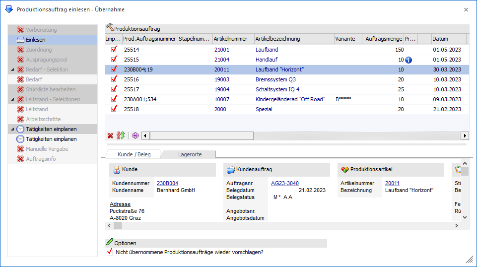
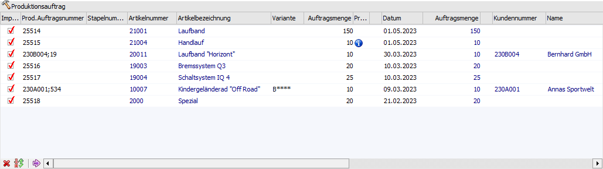
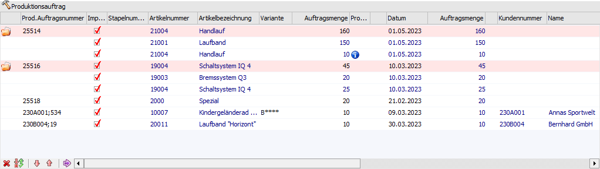
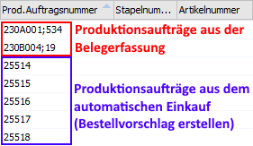
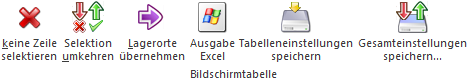
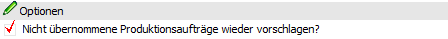
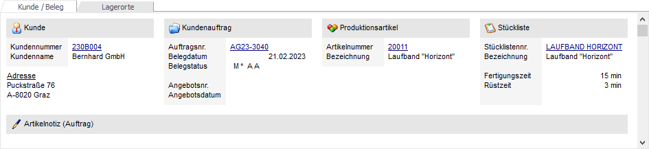
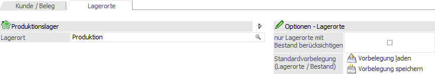
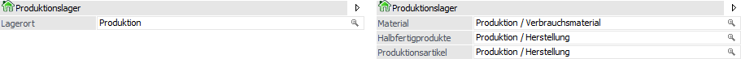
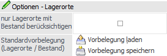

In diesem Bereich des Programms Produktionsauftrag einlesen werden die einzulesenden Produktionsaufträge angezeigt. Vor der Übernahme können diese weiter eingegrenzt und editiert werden.

Innerhalb der Tabelle werden die offenen und noch nicht übernommenen Produktionsaufträgen (gemäß der vorher getätigten Selektion / Gruppierung) angezeigt. Hierbei ist zunächst entscheidet, ob mit einer Gruppierung gearbeitet wird oder nicht.
ü Tabelle "Produktionsaufträge" ohne
Gruppierung

ü Tabelle "Produktionsaufträge" mit
Gruppierung

Hinweis
Sobald in der Gruppierung auch
das Kriterium "1 - Artikel" enthalten ist wird - nur bei Ausprägungsartikel -
nur noch der Hauptartikel mit der Summe aller Ausprägungen hinzugefügt. Dieser
Hauptartikel wird auch gleich aliquot anhand der disponierten Ausprägungen
aufgeteilt.
Ist bei der Gruppierung der Hauptartikel nicht dabei oder der
Produktionsartikel ist ohne Ausprägung, dann werden alle "gleichen" Zeilen zu
einer Zeile zusammengefasst.
In der Tabelle stehen folgende Spalten zur Verfügung:
Ø Importieren
Durch Aktivierung der Checkbox wird der Auftrag als Produktionsauftrag in die Produktion übernommen.
Hinweis
Wird diese Checkbox nicht aktiviert, dann hängt die weitere Entwicklung des Auftrages von der Option "Nicht übernommene Projekte wieder vorschlagen?" unterhalb der Tabelle ab.
Ø Prod. Auftragsnummer
Für jeden Produktionsauftrag wird automatisch eine Auftragsnummer vorgeschlagen, welche aber manuell abgeändert werden kann. Sollte die eingetragene Nummer bereits vorhanden sein, dann auf dieses bei der Übernahme hingewiesen.
Hinweis
In den PPS-Parametern (Bereich "Produktionsauftragsanlage" - Eingabefeld "Nummernkreis") kann ein Nummernkreis hinterlegt werden. Dieser Nummernkreis wird für Produktionsaufträge herangezogen, welche über den Bereich "Bestellvorschlag erstellen" erzeugt wurden.
Sollte es sich um einen Auftrag handeln, welcher durch die Erfassung eines auftragsbezogenen Produktionsartikels in der Belegerfassung der WinLine FAKT entstanden ist, dann bildet sich die vorgeschlagene Auftragsnummer standardmäßig aus der Kundennummer und der Laufnummer des Kundenauftrags. Dieser Standard kann in den PPS-Parametern individuell angepasst werden (Bereich "Produktionsauftragsanlage" - Eingabefeld "Prod. Auftragsnummer - Einlesen").
Beispiel

Ø Stapelnummer
An dieser Stelle kann für den Produktionsauftrag eine Stapelnummer hinterlegt werden. Die Stapelnummer kann wiederum in verschiedenen Programmbereichen (z.B. Leitstand, Materialentnahme, Arbeitsschein, etc.) als Selektionskriterium verwendet werden.
Ø Artikelnummer
An dieser Stelle wird die Artikelnummer des zu produzierenden Artikels angezeigt. Es handelt sich hierbei um ein reines Informationsfeld.
Ø Artikelbezeichnung
An dieser Stelle wird die Artikelbezeichnung des zu produzierenden Artikels angezeigt. Es handelt sich hierbei um ein reines Informationsfeld.
Ø Variante
Wurde bei der Stückliste des Produktionsartikels Varianten bzw. Subvarianten definiert, so kann hier der entsprechende Variantenstring hinterlegt werden bzw. es wird die bereits in WinLine FAKT getroffene Variante vorgeschlagen. Grundsätzlich ist die Hinterlegung über mehrere Wege möglich:
ü Manuelle Eingabe des
Variantenstrings
Bei der manuellen Eingabe des Variantenstrings stehen
folgende Möglichkeiten zur Verfügung:
ü mehrere
Variantenkennzeichen
Werden mehrere Variantenkennzeichen in Form eines
Variantenstrings eingetragen (z.B. "DZK"), dann wird pro Stücklistenebene ein
Kennzeichen herangezogen (1. Stücklistenebene Variante "D", 2. Stücklistenebene
Variante "Z", ab der 3. Stücklistenebene Variante "K").
Hinweis
Wenn mit Subvarianten gearbeitet wird, dann müssen die Varianten jeder Stücklistenebene durch Klammern "{" bzw. "}" zusammengefasst werden (nähere Informationen siehe Kapitel Stückliste - Register "Varianten").
Achtung
Falls über den Variantenstring nicht alle existierenden Stücklistenebenen definiert wurden, dann wird für diese undefinierte Ebenen das letzte Variantenkennzeichen des hinterlegten Strings verwendet und nicht die Standardvarianten.
Beispiel
Es existiert ein
Produktionsartikel mit 5 Stücklistenebenen und in jeder Ebene ist eine Variante
definiert. Bei der Produktionsauftragsanlage wird der Variantenstring "ABC"
hinterlegt, d.h. es sind bisher nur für die ersten 3 Stücklistenebenen die
Varianten gewählt worden.
Bei der Anlage des Auftrags würde in diesem Fall
der String automatisch auf "ABCCC" gesetzt werden. Sollte in der
Ebene 4 bzw. 5 allerdings gar keine Variante "C" anlegte worden sein, dann würde
keine Variante genutzt werden und es würden Komponenten bzw. Tätigkeiten
fehlen!
ü ein Variantenkennzeichen
Wird
nur ein Kennzeichen eingetragen, so wird dieses für alle Ebenen genommen.
Achtung
Wenn dieses Variantenkennzeichen in den anderen Stücklistenebenen nicht angelegt wurde, dann wird für die Stücklistenebene keine Variantenkomponenten bzw. -tätigkeiten genutzt. Falls über den Variantenstring nicht alle existierenden Stücklistenebenen definiert wurden, dann wird für diese undefinierte Ebenen das letzte Variantenkennzeichen des hinterlegten Strings verwendet und nicht die Standardvarianten.
ü kein Kennzeichen
Wird kein
Kennzeichen eingetragen, so wird die Standardvariante ("*") genommen.
ü Auswahl per
Variantendefinition
Durch Anwahl des Lupen-Symbols oder der Taste F9 kann die
Variantendefinition aufgerufen
werden. Über dieses Fenster kann aus den verfügbaren Varianten eines
Produktionsartikels die gewünschte Variantenkombination Schritt für Schritt
ausgewählt werden.
Ø Auftragsmenge
An dieser Stelle wird die produzierende Menge vorgeschlagen. Diese stammt aus der Belegerfassung oder dem "Bestellvorschlag erstellen" der WinLine FAKT und kann manuell abgeändert werden kann.
Ø Problemzeile
An dieser Stelle wird durch ein Symbol gekennzeichnet, ob die Produktionsmindestmenge (gemäß Artikelstamm) unterschritten wird.
ü  - Unterschreitung der
Produktionsmindestmenge (Warnung)
- Unterschreitung der
Produktionsmindestmenge (Warnung)
Die im Artikelstamm hinterlegte
Produktionsmindestmenge wird unterschritten, wobei dieses lt. PPS-Parametern
(Bereich "Parameter" - Einstellung " Prod. Mindestmenge") entweder "0 - erlaubt"
oder "1 - erlaubt mit Warnung" ist.
ü - Unterschreitung der
Produktionsmindestmenge (Sperre)
Die im Artikelstamm hinterlegte
Produktionsmindestmenge wird unterschritten, wobei dieses lt. PPS-Parametern
(Bereich "Parameter" - Einstellung "Prod. Mindestmenge") "2 - nicht erlaubt"
ist.
Ø Auftragsmenge 2
Wenn der Produktionsartikel in 2 Mengen geführt wird, dann wird an dieser Stelle die Auftragsmenge für die 2. Menge dargestellt. Diese stammt ebenfalls aus der Belegerfassung oder dem "Bestellvorschlag erstellen" der WinLine FAKT und kann manuell abgeändert werden kann.
Ø Datum
Im Kundenauftrag bestätigtes Lieferdatum bzw. vorgegebenes Datum aus dem Bestellvorschlag. Das Datum kann vor der Übernahme des Produktionsauftrags noch editiert werden und dient als Startproduktions- oder Zielproduktionsenddatum.
Ø Auftragsmenge
An dieser Stelle wird die originale Produktionsmenge aus dem Kundenauftrag bzw. dem Bestellvorschlag der WinLine FAKT angezeigt. Es handelt sich hierbei um ein reines Informationsfeld.
Ø Auftragsmenge 2
Wenn der Produktionsartikel in 2 Mengen geführt wird, dann wird an dieser Stelle die originale Produktionsmenge für die 2. Menge aus dem Kundenauftrag bzw. dem Bestellvorschlag der WinLine FAKT angezeigt. Es handelt sich hierbei um ein reines Informationsfeld.
Ø Kundennummer / Name / Auftragsnummer
Handelt es sich um einen Produktionsauftrag, welcher aus einem WinLine FAKT-Beleg entstanden ist, so werden in diesen Spalten die Daten aus dem Beleg als Zusatzinformation angezeigt (Kontonummer, Kontobezeichnung, Laufnummer; jeweils nicht veränderbar).
Ø Notiz
Per Doppelklick kann ein extra Fenster geöffnet werden, in welchem ein beliebig langer Text zum Produktionsartikel bzw. Produktionsauftrag, welcher auch Formatierungen enthalten darf, erfasst werden kann. Der Text dient dabei entweder als reine Informationen oder kann beispielsweise auf dem Arbeitsschein angedruckt werden.
Hinweis
Dieses Feld wird automatisch mit dem Inhalt des Felds "Notiz" aus dem Stücklistenstamm gefüllt.
Ø Priorität
In dieser Spalte kann eine Prioritätsnummer (5-stellig) für den Produktionsauftrag vergeben bzw. abgeändert werden, wobei die Zahl frei gewählt werden kann. Die Priorität dient z.B. als Selektionskriterium in diversen Programmen.
Hinweis
Stammt der Produktionsauftrag aus der Belegerfassung der WinLine FAKT, dann wird die Priorität aus dem Kundenauftrag (Register "Zusatz" - Feld "Priorität") vorbelegt. Bei Produktionsaufträgen aus dem Bestellvorschlag wird automatisch die "0" vorgeschlagen.
Achtung
Über die PPS-Parameter (Bereich "Parameter" - Option "absteigende Priorität verwenden…") kann definiert werden, ob "0" oder "99999" die höchste zu vergebene Priorität besitzt.
Ø Produktionsmindestmenge
An dieser Stelle wird die Produktionsmindestmenge des zu produzierenden Artikels aus dem Artikelstamm angezeigt. Es handelt sich hierbei um ein reines Informationsfeld.
Ø Optimale Menge
An dieser Stelle wird die optimale Produktionsmenge des zu produzierenden Artikels aus dem Artikelstamm angezeigt. Es handelt sich hierbei um ein reines Informationsfeld.
Ø Projektnummer / Projektname
Handelt es sich um einen Produktionsauftrag, welcher aus einem WinLine FAKT-Beleg entstanden ist, so werden in diesen Spalten die Projektdaten des Belegs als Zusatzinformation angezeigt (Projektnummer, Projektbezeichnung; jeweils nicht veränderbar).
Ø Lagerort / Lagerort Material / Lagerort Halbfertigprodukte / Lagerort Produktionsartikel
In diesen Spalten kann eine Lagerortvorbelegung pro Produktionsauftrag erfolgen. Die Vorbelegung wird u.a. in der Zuordnung für eine automatische Lagerortaufteilung verwendet.
Hinweis
Die Anzahl der zur Verfügung stehenden Spalten ist abhängig vom gewählten Modus (siehe Register "Lagerorte").
Tabellenbuttons

Ø keine Zeile selektieren
Durch Anklicken dieses Buttons wird die Auswahl "Importieren" bei allen Produktionsaufträge entfernt.
Ø Selektion umkehren
Durch Anklicken dieses Buttons wird die Auswahl "Importieren" in das Gegenteil umgewandelt - ausgewählte Produktionsaufträge werden abgewählt, abgewählte Aufträge werden ausgewählt.
Ø Lagerorte übernehmen
Mit Hilfe des Buttons "Lagerorte übernehmen" wird die Lagerortvorbelegung an die ausgewählten Produktionsaufträge (siehe Spalte "Importieren") übertragen.
Ø alle Ordner öffnen (nur bei aktiver Gruppierung)
Durch Anklicken dieses Buttons werden alle Ordner in der Tabellenansicht ausgeklappt. Dieser Button steht nur zur Verfügung, wenn Gruppierungs-Objekte im ersten Schritt selektiert wurden.
Ø alle Ordner schließen (nur bei aktiver Gruppierung)
Durch Anklicken dieses Buttons werden alle Ordner in der Tabellenansicht eingeklappt. Dieser Button steht nur zur Verfügung, wenn Gruppierungs-Objekte im ersten Schritt selektiert wurden.
Ø Ausgabe Excel
Durch Anwahl des Buttons "Ausgabe Excel" wird der Inhalt der Tabelle an Microsoft Excel übergeben.
Ø Tabelleneinstellungen speichern
Die Spalten einer Tabelle können grundsätzlich an beliebige Positionen verschoben, bzw. in der Breite entsprechend angepasst werden. Durch Anwahl des Buttons "Tabelleneinstellungen speichern" werden die Einstellungen benutzerspezifisch gespeichert und bei dem nächsten Aufruf des Programmpunktes wieder vorgeschlagen.
Ø Gesamteinstellungen speichern…
Im Gegensatz zu "Tabelleneinstellungen speichern" können mit "Gesamteinstellungen speichern" mehrere Tabellenaufbauten gespeichert und nach Wunsch geladen werden. Zusätzlich werden Sonderfunktionen der Tabelle (z.B. "Spalte gruppieren") ebenfalls bei der Speicherung bedacht.
Optionen

Ø Nicht übernommene Projekte wieder vorschlagen?
Die Aktivierung dieser Option bewirkt, dass Produktionsaufträge, welche in der Tabelle angezeigt werden, aber nicht übernommen werden sollen (siehe auch Spalte "Importieren"), beim nächsten Einlesen von Produktionsaufträgen wieder vorgeschlagen werden.
Wird die Option nicht aktiviert, dann werden solche angezeigten und nicht übernommenen Aufträge gelöscht.
Hinweis
Muss solch ein gelöschter Produktionsauftrag doch produziert werden, dann muss die Auftragsanlage manuell vorgenommen werden.
Register "Kunde / Beleg"

In dem Register "Kunde / Beleg" wird ein Informationsbereich angeboten, welcher detaillierte Informationen über den ausgewählten Produktionsauftrag dargestellt.
Register "Lagerorte"

Im Register "Lagerorte" können die Einstellungen für eine Lagerortvorgabe definiert werden, welche u.a. im Fenster Zuordnung zum Tragen kommen.
Produktionslager

An dieser Stelle kann eine Lagerortvorbelegung für die
einzulesenden Produktionsaufträge erfolgen. Hierbei wird zwischen dem normalen
Modus und dem Expertenmodus unterschieden, wobei zwischen den Modi mit Hilfe des
Icons  jederzeit gewechselt werden
kann.
jederzeit gewechselt werden
kann.
Achtung
Die Übernahme an die ausgewählten Produktionsaufträge erfolgt mit Hilfe des Tabellenbuttons "Lagerorte übernehmen". Eine manuelle Hinterlegung pro Auftrag steht über die Lagerort-Spalten der Tabelle natürlich auch zur Verfügung. Ob dabei 1 oder 3 Spalten angeboten werden, ist von dem hier gewählten Modus abhängig.
Hinweis
Die Vorbelegung besteht aus den Orten und der Option "nur Lagerorte mit Bestand berücksichtigten" und kann mit Hilfe der Buttons "Vorbelegung laden" und "Vorbelegung speichern" benutzerspezifisch gespeichert bzw. geladen werden.
Ø Lagerort (normale Modus)
Sobald an dieser Stelle ein Lagerort hinterlegt wurde, kann in der Zuordnung eine automatische Lagerortaufteilung erfolgen, wobei alle Bestandteile des Auftrags (Material / Komponeten, Halbfertigprodukte und Produktionsartikel / Fertigprodukte) den gleichen Lagerort bzw. Lagerortbereich verwenden. Der Ort wird direkt im Produktionsauftrag gespeichert und muss nicht der letzten Hierarchie-Ebene entsprechen.
Hinweis
Der Lagerort wird (neben der Zuordnung) auch im Fenster "Lagerorte erfassen" als Vorgabe verwendet.
Ø Material / Halbfertigprodukt / Produktionsartikel (Expertenmodus)
Im Expertenmodus kann pro Bestandteil eines Auftrags (Material / Komponeten, Halbfertigprodukte und Produktionsartikel / Fertigprodukte) ein eigener Lagerort bzw. Lagerortbereich vorgeben werden, wobei diese Informationen direkt im Produktionsauftrag gespeichert werden. Mit Hilfe dieser Vorgabe kann in weiterer Folge eine automatisch Lagerortaufteilung in der Zuordnung erfolgen. Die Orte müssen dabei nicht der letzten Hierarchie-Ebene entsprechen.
Hinweis
Die Lagerorte werden (neben der Zuordnung) auch im Fenster "Lagerorte erfassen" als Vorgabe verwendet.
Optionen - Lagerorte

Ø nur Lagerorte mit Bestand berücksichtigten
Mit Hilfe dieser Option kann gesteuert werden, ob in der Zuordnung (bei Verbrauchsmaterial) nur jene Orte verwendet werden sollen, welche aktuell einen Bestand aufweisen.
Hinweis
Im Gegensatz zu einer Lagerortvorgabe wird die gewählte Einstellung nicht pro Produktionsauftrags gespeichert!
Ø Standardvorbelegung (Lagerorte / Bestand)
Mit Hilfe der Buttons "Vorbelegung laden" und "Vorbelegung speichern" kann die aktuelle Lagerortvorgabe, sowie die Option "nur Lagerorte mit Bestand berücksichtigten", benutzerspezifisch geladen bzw. gespeichert werden.
Hinweis
Weichen die aktuellen Einstellungen vom Standard ab, so wird hierauf wie folgt hingewiesen: